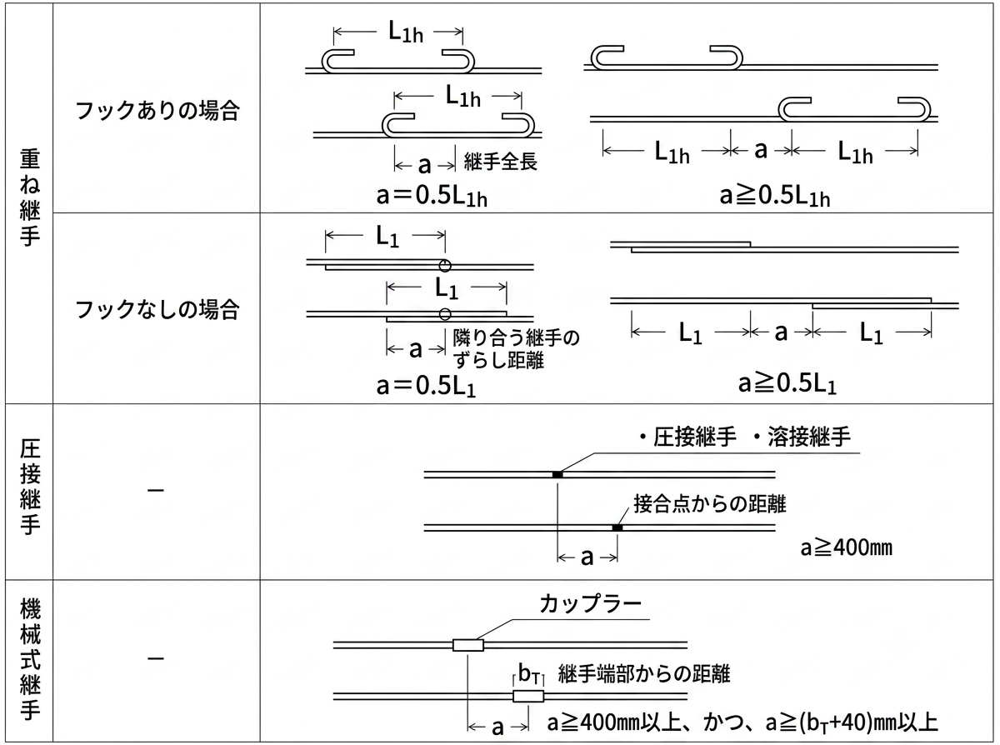

鉄筋継手の種類とは？重ね継手の長さ・基準・圧接・機械式を解説
RC造の配筋で必ず登場するのが鉄筋の継手（つぎて）です。この記事では、鉄筋継手の3種類（重ね継手・圧接継手・機械式継手）の違いと使い分け、そして実務で迷いやすい重ね継手の長さの決まり方を、継手長さ表とあわせて整理します。
- 鉄筋の継手とは、分割した2本の鉄筋を1本と同等の性能になるよう接合すること。種類は重ね継手・圧接継手・機械式継手の3つ。
- 重ね継手の長さはコンクリートの設計基準強度Fcと鉄筋の強度で決まり、フックを付けると付着力が高まり継手長さを短くできる。
- 太径（D19以上など）では重ね継手ではなく圧接継手・機械式継手が用いられる。
鉄筋の継手とは？なぜ必要なのか
鉄筋の継手とは、2本の鉄筋を1本につなぎ合わせることです。代表例が、2本を重ねてコンクリートの付着力で力を伝える「重ね継手」です。
では、なぜ継手が必要なのでしょうか。理由は鉄筋の長さの制約にあります。
- 鉄筋は標準で長さ12m以下の製品として製造されます。
- 一方、建物の部材は12mを超えることもあります（例：長さ15mの梁）。
- 長尺の鉄筋は製造も運搬も困難なため、数mに分割して現場へ運びます（例：7.5m＋7.5m＝15m）。
ただし、分割したままでは鉄筋は1本分の性能を発揮できません。そこで継手によって、分割した鉄筋を「1本と同等」に働かせるのです。
重ね継手の長さの考え方
重ね継手の長さは、コンクリートの設計基準強度（Fc）と鉄筋の強度で決まります。実務では後述の表から読み取りますが、その値は次の考え方が元になっています（一次設計時）。
ここで L＝継手長さ、σb＝鉄筋に作用する応力度、db＝鉄筋の呼び径、fa＝許容付着応力度です。
考え方はシンプルです。継手とは「鉄筋Aに作用する応力を、鉄筋Bへ確実に伝える」こと。重ね継手は鉄筋同士を溶接も機械接合もせず、配筋時に結束線で束ねる程度です。そのままでは力が加わるとバラバラになりますが、コンクリートを打設して固まると、鉄筋Aの応力はコンクリートの付着力を介して鉄筋Bへ伝わるようになります。上の式は、この「付着で力を伝えるのに必要な重ね長さ」を表したものです。
鉄筋端部にフックを付けると付着力が向上するため、フックなし（L1）よりフックあり（L1h）の方が継手長さを短くできます。
鉄筋の重ね継手長さ表
実務では、上記のような計算は毎回行いません。鉄筋の種類とコンクリートのFcが分かれば、表から継手長さ（鉄筋径dの倍数）を読み取れます。
| 鉄筋の種類 | Fc（N/mm²） | L1（フックなし） | L1h（フックあり） |
|---|---|---|---|
| SD295A SD295B | 18 | 45d | 35d |
| 21 | 40d | 30d | |
| 24・27 | 35d | 25d | |
| 30・33・36 | 35d | 25d | |
| SD345 | 18 | 50d | 35d |
| 21 | 45d | 30d | |
| 24・27 | 40d | 30d | |
| 30・33・36 | 35d | 25d | |
| SD390 | 21 | 50d | 35d |
| 24・27 | 45d | 35d | |
| 30・33・36 | 40d | 30d |
※ d は鉄筋の直径（呼び径）を表します。例：D16・SD345・Fc24でフックなしなら 40d ＝ 40×16 ＝ 640mm。
上表は公共建築工事標準仕様書を元に作成しています。公共建築物はこれに準じるのが基本ですが、日本建築学会のRC計算規準・配筋指針ではもう少し緩い値になります。適用する基準を確認のうえご利用ください。
D19以上などの太径鉄筋では、重ね継手ではなく圧接継手が用いられます。やりたいこと（複数本を1本にする）は同じですが、圧接は鉄筋に熱を加えて1本に造り替えてしまう点が異なります（溶接とは別物ですが近いイメージです）。
継手の種類（重ね・圧接・機械式）
鉄筋継手は大きく次の3種類です。
- 重ね継手：細径の鉄筋で最も多用される。鉄筋を重ねてコンクリートの付着で力を伝える。
- 圧接継手（ガス圧接）：鉄筋端面を加熱・加圧して一体化。太径に多い。
- 機械式継手：カップラー（継手金具）で鉄筋を接合する。

カップラーとは、鉄筋を差し込めるよう孔の空いた金具です。孔は全ネジになっており、両側から鉄筋をネジの要領で差し込みます。鉄筋Aの応力は、カップラーを介して鉄筋Bへ伝わります。機械式継手は施工精度が高く、狭あい部の施工にも適するのが利点です。
どの継手でも、各鉄筋の継手位置が同じ断面に集中しないよう、所定の距離 a だけずらして配置します。継手が一列に並ぶ状態（いも継手）は弱点になるため避けます。重ね継手では a≧0.5L1（フックなし）など、圧接・機械式では a≧400mm などの規定があります。
混同しやすい用語の整理
重ね継手
2本の鉄筋を並べて重ね、コンクリートの付着力で力を伝達する方法。細径鉄筋（D16以下程度）に多用されます。圧接継手と違い、鉄筋同士を直接一体化はせず、付着に頼るため重ね長さが必要です。
圧接継手
鉄筋の端部を加熱・加圧して一体化させる方法。D19以上の太径鉄筋に用いられ、鉄筋1本分の強度を直接伝達できます。鉄筋を直接つなぐため、重ね継手のような重ね長さは不要です。
| 継手の種類 | 概要 | 適用範囲・特徴 |
|---|---|---|
| 重ね継手 | 鉄筋を一定長さ重ねて配置 | 細径（D16以下）に多用。Fcが大きいほど継手長さは短い |
| 圧接継手 | 鉄筋端面を加熱・加圧して接合 | D19以上の太径に使用。信頼性が高い |
| 機械式継手 | カップラーで鉄筋を接合 | 施工精度が高く、狭あい部の施工に適する |
まとめ
- 鉄筋の継手は、分割した鉄筋を1本と同等の性能にする接合。種類は重ね・圧接・機械式の3つ。
- 重ね継手の長さはFcとSD強度で決まり、表から「○d」で読み取る。フックありは短くできる。
- 太径はおもに圧接、狭あい部などは機械式と、条件で使い分ける。
- 継手位置はいも継手を避けて所定距離ずらす。
RC造の基礎は鉄筋コンクリート造カテゴリにまとめています。コンクリートの強度については「コンクリートの許容応力度」もどうぞ。
※継手長さ・継手位置の規定は、適用する基準（公共建築工事標準仕様書／日本建築学会規準など）や年度の改定により異なります。実務では必ず採用基準の最新版をご確認ください。